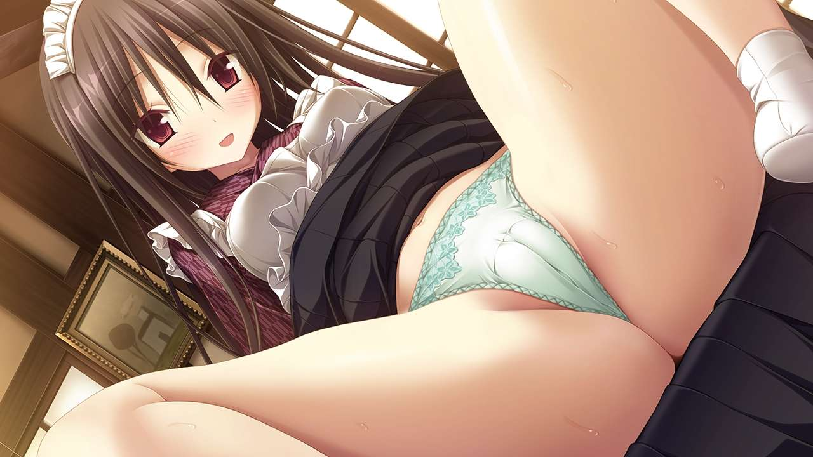
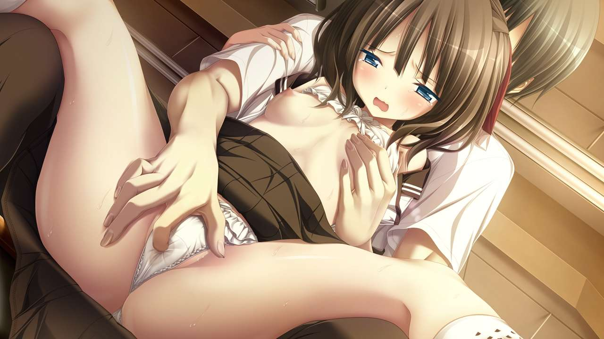
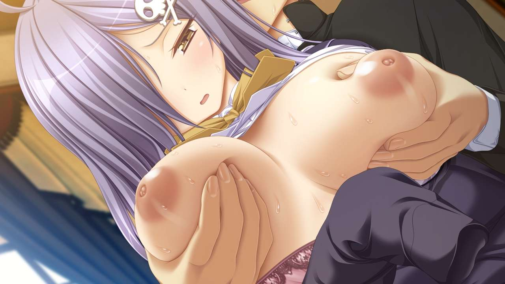
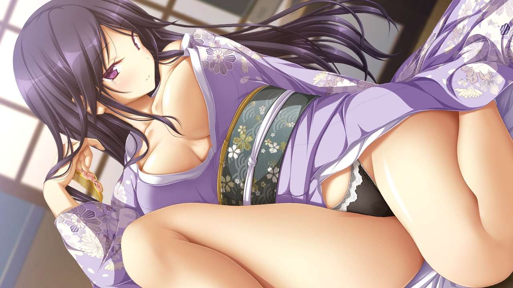
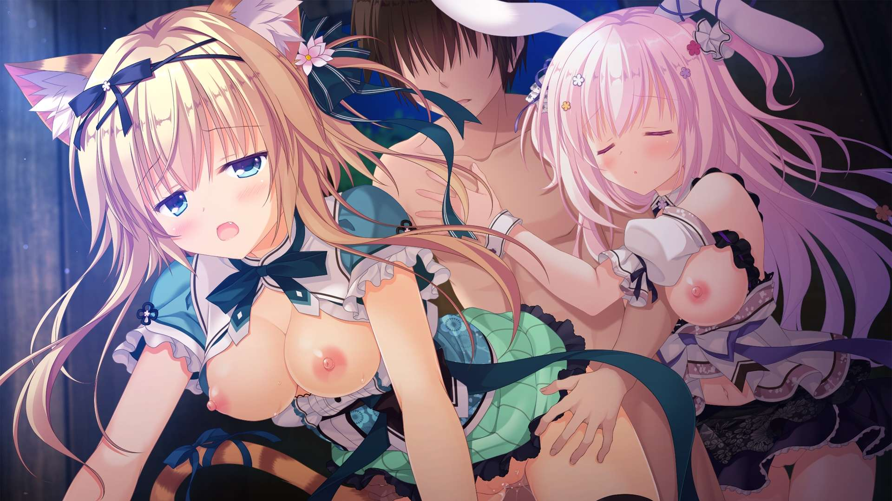

彩蝶的黄油时间——番外篇
回到首页
压缩版PDF下载
序
这一期不对任何游戏作具体的介绍，只会放色图。
另外可以参考一下“峰溢杯”南七技校Galgame同好会2023年最色HS评选大赛及其颁奖典礼， 如果你觉得这里面的游戏不够色那请积极参与投稿活动。
本期不涉及对于游戏性、剧情的深挖，所以很有可能会看到一些会让拳头硬起来的作品。
闲话不多说，开始正篇。
Eushully
为什么是Eushully而不是ALICESOFT，有一部分原因是我个人喜好——因为ALICESOFT没有周回全继承，去打二周目会感觉一周目费尽心力收集的东西全都白费了。
其次是Eushully的美术整体水平不错加上量大管饱，总能挑出几个不错的CG，而ALICESOFT我冲不起来。
Eushully目前主力画师是やくり、夜ノみつき、うろ。 早期主力画师鳩月つみき近年几作基本不出现，倒是在最新的分割商法作品天冥のコンキスタ的1、3两部分画了俩BOSS。 やくり发挥很稳定；夜ノみつき个人色彩浓厚，特色是一系列兽耳娘和萝莉，服装设计相对而言更简单；うろ往期作品主要画老头子和怪物， 服装设计很繁复，近年进步很大，在天冥のコンキスタ里画的一大票天使和恶魔属实是惊艳到我了。
以下以发售时间顺序排列。
神のラプソディ——リーシェ
神のラプソディ——ノエリア&パトラ
神のラプソディ——ラヴィリエ・インタルーデ&ミストリア
珊海王の円環——ソーニャ
天結いキャッスルマイスター——嵐燐結騎
封緘のグラセスタ——ユナギ・シャイエ
封緘のグラセスタ——ユリーシャ（本作）、メティサーナ（天秤のLa DEA。 ～戦女神MEMORIA～）、 ミクシュアナ（天結いキャッスルマイスター）、メロディアーナ（神採りアルケミーマイスター）、エリザスレイン（神採りアルケミーマイスター）
封緘のグラセスタ——リリカ・ルシティーネ
天冥のコンキスタ——セルージュ
天冥のコンキスタ——ルシエル
天冥のコンキスタ——ベアトリース
天結いラビリンスマイスター——煌燐結騎
天結いラビリンスマイスター——嵐燐結騎
Eushully的游戏其实大致上都是大同小异，除去早年的作品，近年比较色的要么战棋游戏要么回合制RPG，而且趋势上是越来越弱保软都没上什么恶心玩家的刷子机制了。
至于该玩哪一部问弟弟别问我。
Purple SOFTWARE
又该重量级了。
Purple SOFTWARE主要是克的个人特色过强，以至于凡是和他合作的的原画经过同一个上色之后基本就如天壤之别，在此心疼一下早期的主力画师月杜尋。
也正是因为克的个人特色过强，很多人都认为Purple SOFTWARE就是火箭奶子和凹陷奇酷比。
火箭奶子是克在Purple SOFTWARE的第一作未来ノスタルジア就开始有的，而凹陷奇酷比是アマツツミ才开始的。
另外クナド国記的凹陷奇酷比不是克画的。
新的分割商法系列作クリミナルボーダー换了个原画さめまんま，可惜我个人欣赏不来。
还是按照发售顺序排序。
ハピメア——弥生・B・ルートウィッジ
ハピメア——平坂景子
ハピメア——内藤舞亜
クロノクロック——クロ
クロノクロック——城之内真琴
クロノクロック——安藤美咲
アマツツミ——織部こころ
アマツツミ——水無月ほたる
アマツツミ——恋塚愛
アオイトリ——海野あかり&メアリー・ハーカー&黒崎小夜

アオイトリ——海野あかり
アオイトリ——メアリー・ハーカー
アオイトリ——黒崎小夜
リアライブ——真深眠
リアライブ——真深眠の母親 真深円香
リアライブ——真深眠の家族 真深眠&真深明里&真深円香
リアライブ——レヴィ

リアライブ——祭矢みなと
青春フラジャイル——桜宮氷緒
青春フラジャイル——不破ゆら
青春フラジャイル——桜宮響希
青春フラジャイル——卯月透音
青春フラジャイル——リズ・メイサース
青春フラジャイル——鳥羽せつな
クナド国記——茜&葵
クナド国記——燕
杂项
这一部分是某几个我个人觉得很色的作品，不是上面的按照会社推荐的方式了。
QUALIA ～約束の軌跡～
单女主小品作，原画是鈴城敦，女主配音北見六花。
Sekai Project已代理，Steam有售。
QUALIA ～約束の軌跡～——マキナ
PRIMAL×HEARTS
这作我觉得是ま〜まれぇど可以冲得最爽的一作。
这个会社特色是马赛克打得体感很薄，HS量大差分也多。
PRIMAL×HEARTS——神流歌奈
PRIMAL×HEARTS——倉賀野聖良
PRIMAL×HEARTS——駒形ゆづき
SILKY'S PLUS
不知道是这个社上色水平突飞猛进还是请来的原画水平超群，反正最近几年的两个健全作品都很色。
ふゆから、くるる。——月角島ヴィカ
ふゆから、くるる。——熾火澱&空丘夕陽の手
ふゆから、くるる。——熾火澱&宇賀島ユカリ
ふゆから、くるる。这作的其中一个原画是あめとゆき，她最早是在SMEE干活，她走了之后接手的谷山さん越画越烂。
きまぐれテンプテーション——アンネリーゼ
きまぐれテンプテーション这作因为原画きみしま青画的女主角特别像她的另一作恋×シンアイ彼女的女主角姫野星奏， 这作也被戏称为“魅魔星奏”。同理あかべぇそふと3的まほ×ろば -Witches spiritual home-被戏称为“魔法星奏”。
做黄油总不能过得去的画师、水平超常的剧本一个都不占吧，都不占玩都玩不爽怎么能让玩家开心呢？
Whirlpool
终于要开始重头戏了。
Whirlpool早期和水鏡まみず轮流出作品的原画てんまそ自2016年的ワールド・エレクション之后就再也没出过作品。 目前这个社的主力原画水鏡まみず负责全价作，白もち桜和在Circus也打工的鷹乃ゆき负责分割商法系列作。
白もち桜我冲不动，略去不谈。
这个社完全从反面印证了我上一个section末所发表的观点，目前这个社的剧本都是由近江谷宥一人操办，而这个剧本家写的东西说好听点叫想象力丰富， 说难听点叫瞎几把乱写，写短篇作倒是影响不大，但是写全价作就开始犯病。只能说好在他至少比工藤啓介脑回路正常点，起码每个角色本身是正常人。
但是就是有着这么脑瘫的剧本的社，被质量超群的原画带着居然还能以一年两部小品作，一年半一部全价作的频率出作品，说明剧本根本不重要。 或者说除非到Qruppo这种境界，在声优基本没有大差距的大环境下，原画师才是决定作品能不能卖出去以及够不够色的关键所在。
鷹乃ゆき在Circus普遍画得比较素，自己的插画商稿和在Whirlpool整体风格要色彩更丰富一些。
水鏡まみず在2015年的鯨神のティアスティラ之后开始画肥美的奇酷比，之前的作品就不放了。
鷹乃ゆき
猫忍えくすはーと——猫飼律
猫忍えくすはーと——猫飼律&猫山マヤ
猫忍えくすはーと——猫山マヤ
猫忍えくすはーと——石川沙奈
猫忍えくすはーと——風魔ゆら&風魔たま
猫忍えくすはーと——風魔ゆら
猫忍えくすはーと——風魔たま
竜姫ぐーたらいふ——ドラ美
竜姫ぐーたらいふ——ハル
竜姫ぐーたらいふ——一ノ瀬鈴夏
竜姫ぐーたらいふ——さんご
竜姫ぐーたらいふ——メイ
竜姫ぐーたらいふ——一ノ瀬秋乃
竜姫ぐーたらいふ——イリス
水鏡まみず
鯨神のティアスティラ——天川湊月
鯨神のティアスティラ——成海真莉音
鯨神のティアスティラ——上遠野恵那
鯨神のティアスティラ——リル＝ホエール
初情スプリンクル——花房小春
初情スプリンクル——日向みお
初情スプリンクル——冥堂羽月
初情スプリンクル——百々咲雫
pieces——君原結愛
pieces——小鳥遊紬

pieces——藍野深織
pieces——美城ありす
pieces/揺り籠のカナリア——伊集院貴美香
アンレス・テルミナリア——御厨恋
アンレス・テルミナリア——りな
アンレス・テルミナリア——橘シャロン
アンレス・テルミナリア——ルチア＝ヴァリニャーノ
尾声
黄油虽好，可不要冲太多哦！